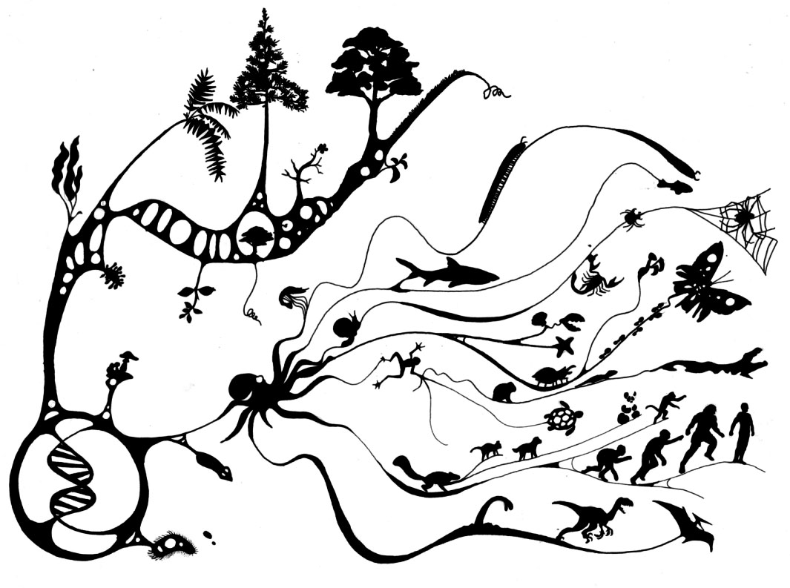
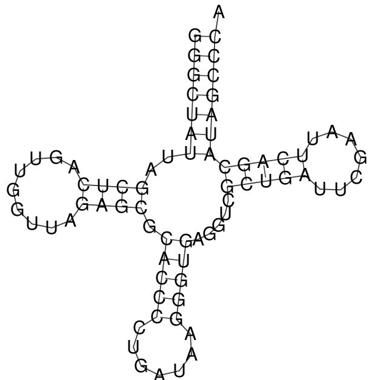
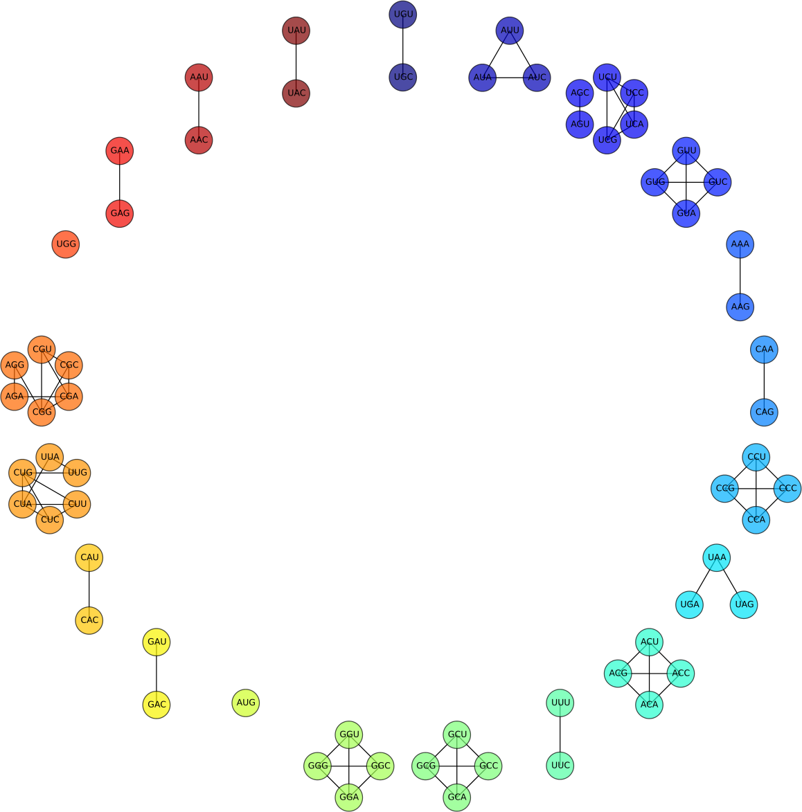
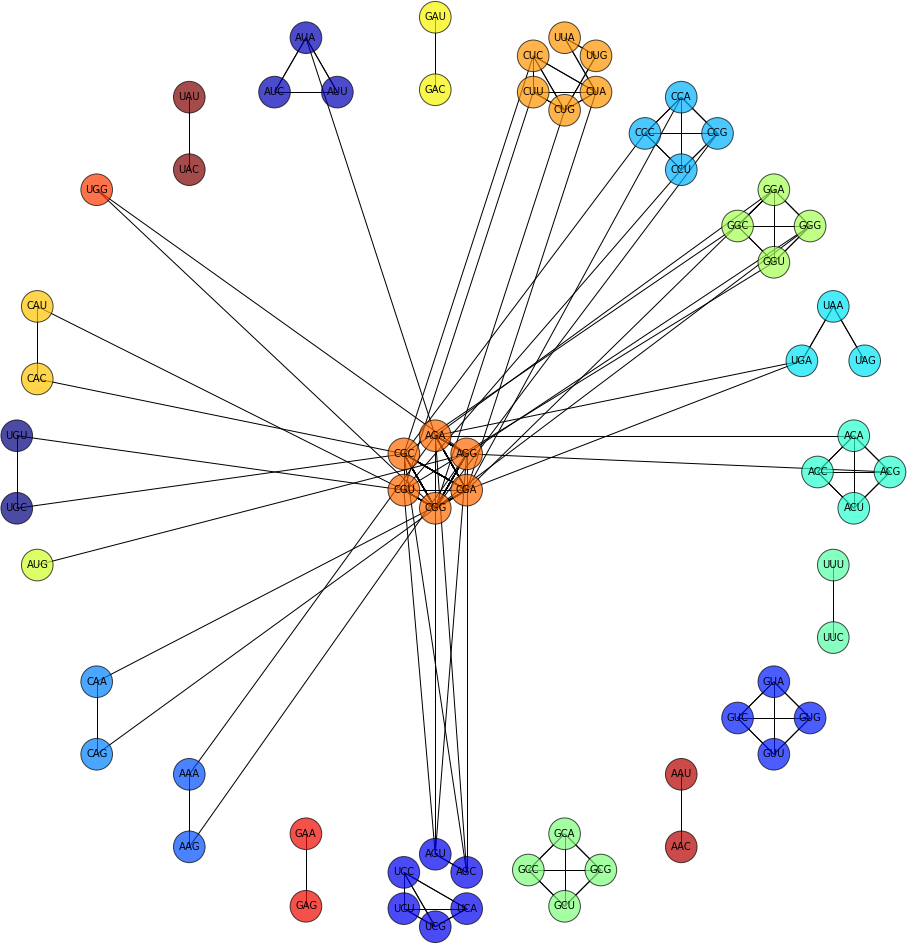
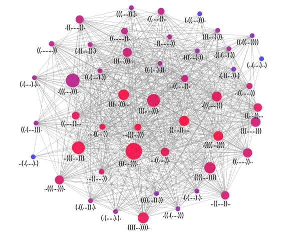
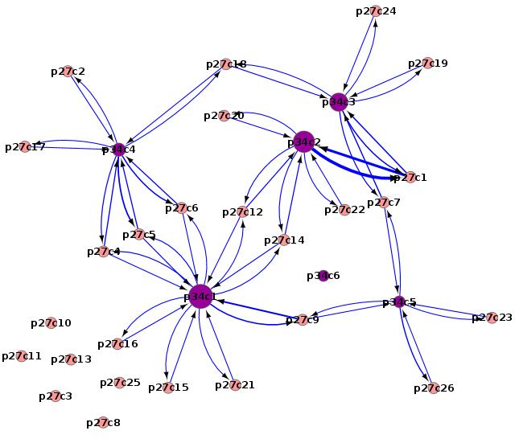
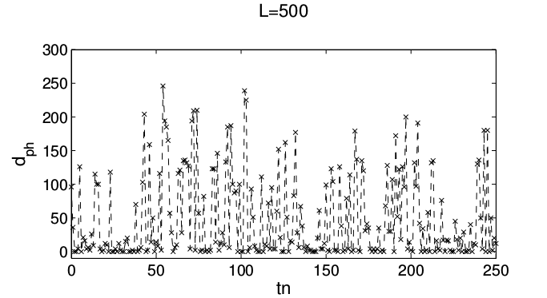
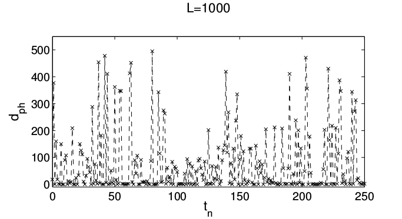
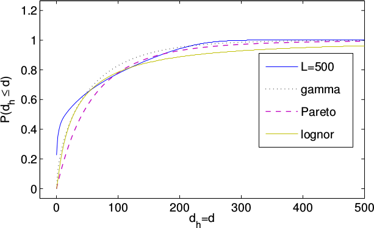

Carlos A Lugo-The Sainsbury Laboratory
@kupkasmale
http://calugo.github.io

Robustness and Evolvability
Multi-scale
Novel uses of known solutions
Accounts for the multiple origin of innovations
Provides insights about the role of changes in the environment
A. Wagner, Trends in Genetics (2011)
Image title:"Evolución" by Roberto Gomes http://isignrob.deviantart.com/
Are the result of microscopic changes in:
Systematically can be studied by the theory of: Genotype-Phenotype Maps
Genotype spaces are composed by large neutral sets (Connected Networks of elements with the same pheotype)
Neighborhoods of genotypes exhibit great phenotypic diversity.
Sequences:
$g_i=\{\sigma_{i,j}\}_{j=1}^{L}$, $\sigma_{i,j}\in[C,G,A,U]$
$\Omega_L=\{g_i\}_{i=1}^{4^L}$
Metabolic Networks and GRN.
Folding and Assembly structures
Protein Structure by Holger87. CC BY-SA 3.0 via Wikimedia Commons
Genotype:GGGCUAUUAGCUCAGUUGGUUAGAGCGCACCCCU
GAUAAGGGUGAGGUCGCUGAUUCGAAUUCAGCAUAGCCCA
RNA Phenotype proxy (Has a distance):
(((((((..((((.........)))).(((((.......))))).....(((((.......)))))))))))).
Example: The genetic code (L=3): 64 sequences, 21 Aminoacids.
Network of codons at $d_{ij}=1.0$
Neutral sets networks only

Phenotype Neighourhoods:
Proline
Arginine

J. Aguirre et al, PLOS ONE (2011)
$\left| \Omega _L \right|=4^L=16777216$
$i:$ Phenotype, $n_i:$Phenotype Size
Mean degree: $k_i \simeq \ln ( n_{i} )$
Clustering:
$C_{k_i}\sim {k_i}^{-1}$
$C_{n_i}\sim ln (n_i)^{-1}$
Number of phenotypes $\simeq$ 50
Number of connected sets $\simeq$ 500
Degree Distributions $p_i(k)$ Unimodal
Assortativity: $k_{n,n}$ increasing (r>0)
L=12 RNA Phenotype Landscape
Phenotypes: p27: ((.(....).)) and p34: ((....)).... connections
Low lengths have diluted and fragmented phenotype spaces (For L=12 only 12% of the sequences fold).
Random walks, context free grammars and sampling allow us to:
• Quantify the long term features of random walks in the phenotype landscape.
•Total number of non-empty phenotypes.
•Phenotype size distributions.
•Dwelling time distributions.
EFFECTIVE THEORY OF MOLECULAR EVOLUTION!
S. Manrubia and J. Cuesta, Interface (2014)
 

Generate all the possible words of length $L$ using the alphabet $\{(,•,)\}$ and the constraints:
- The secondary structure does not have pseudo-knots.
- Base triplets are not allowed
- Minimal number of upaired nucleotides is 3
W. A. Lorenz et al, Asymptotics of RNA Shapes (2007)
P Clote et al, J of Bioinformatics and Comp Biol (2009)
$d_{ph}(a,b)$ distance between phenotypes a and b.
Let $j_{t}$: target phenotype of size $\left|\omega_{j_{t}}\right|$ and $\lambda_{d}=\{j | d_{ph}(j,j_{t})\leq d\}$
Then: $\left| \omega_{j_{t}}\right|=\left|\lambda_{0}\right|=\Pi_{k=0}^{d_{max-1}}\frac{\left|\lambda_{k}\right|}{\left|\lambda_{k+1}\right|}\left|\lambda_{d_{max}}\right|$
Allow us to know $\left|\lambda_{0}\right|$ by sampling the fractions $\frac{\left|\lambda_{k}\right|}{\left|\lambda_{k+1}\right|}$ ($\left| \lambda_{d_{max}} \right| =4^{L}$)
T. Jorg et al, BMC Bioinformatics (2008)
Combinatorics, inverse folding and sampling allow us:
- To characterise jumps between phenotypes.
- Determine the phenotype sizes and size distribution.
Broad jump-sizes and dwelling time distributions lead to Non-Markovian dynamics.
Transitions between phenotypes depend on the neutral network size.
An effective dynamical theory of evolution seems achievable if we have a good idea of the topological details induced by the genotype-phenotype mapping.
Analytical and numerical evidence suggest that these “evolutionary searches” can be described by “Levy-like" processes.
M. C. Cowperthwaite et al, PLOS Comp. Biol. (2008)
B. S. Khatri et. al, PNAS (2009)
J. Aguirre et al PRE (2009)
E. Ibañez-Marcelo and T. Alarcón, J. Theor. Biol. (2014)
S. F. Greebury et. al J. R. Soc. Interface (2014)
C. F. Arias et al, Scientific Reports (2014)
C. A. Lugo et al (in preparation)
Susanna Manrubia (CNB-CSIC, Madrid, Spain)
Jacobo Aguirre (CNB-CSIC, Madrid, Spain)
Jose Cuesta (Universidad CIII, Madrid, Spain)
Iván Dotu (Boston College, Boston USA)
Martin Page (TSL, Norwich U.K.)